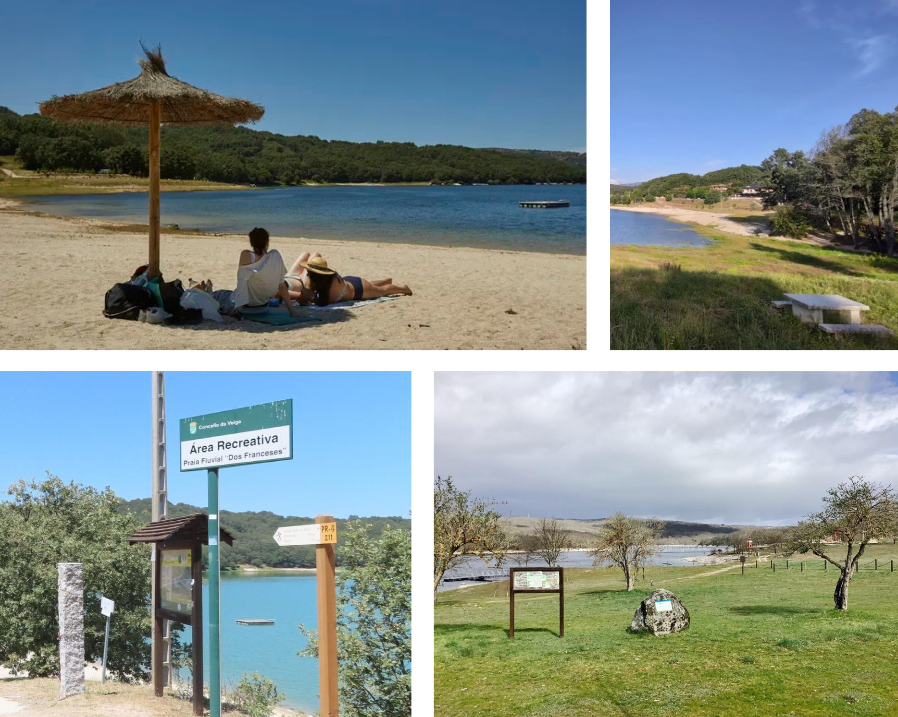
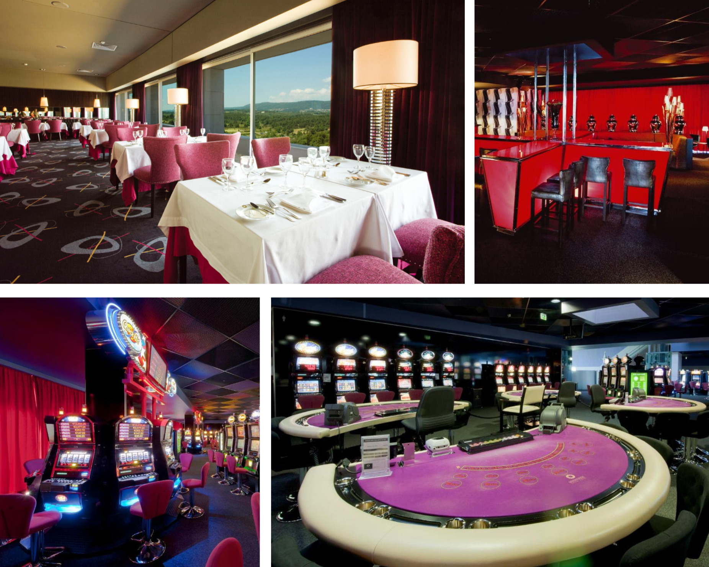
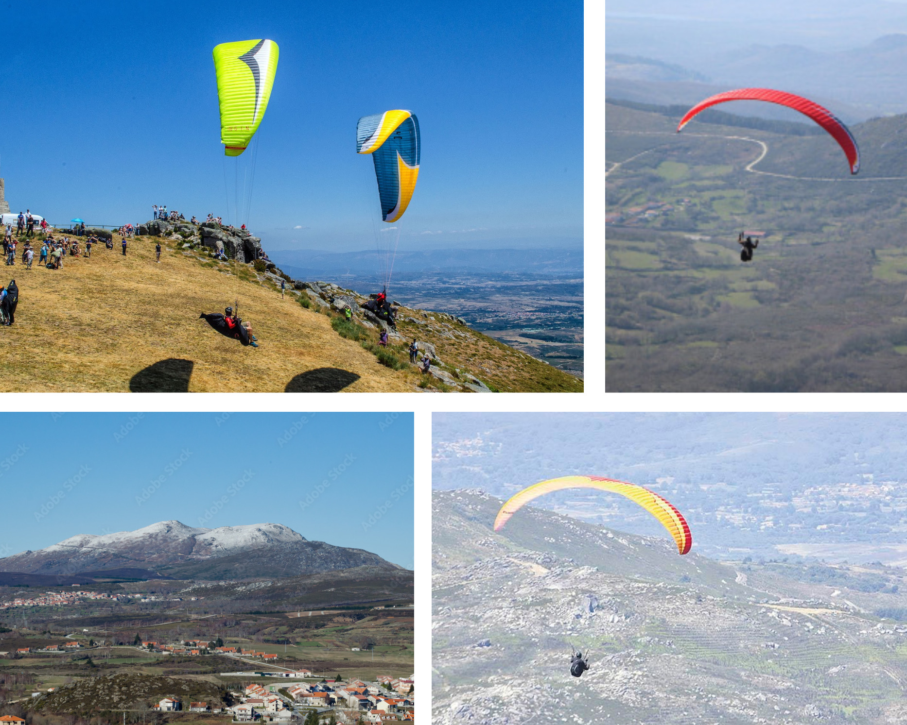
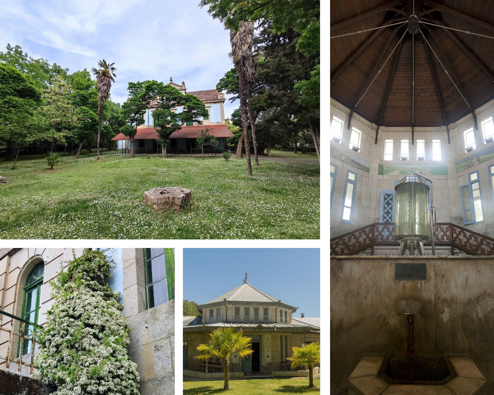
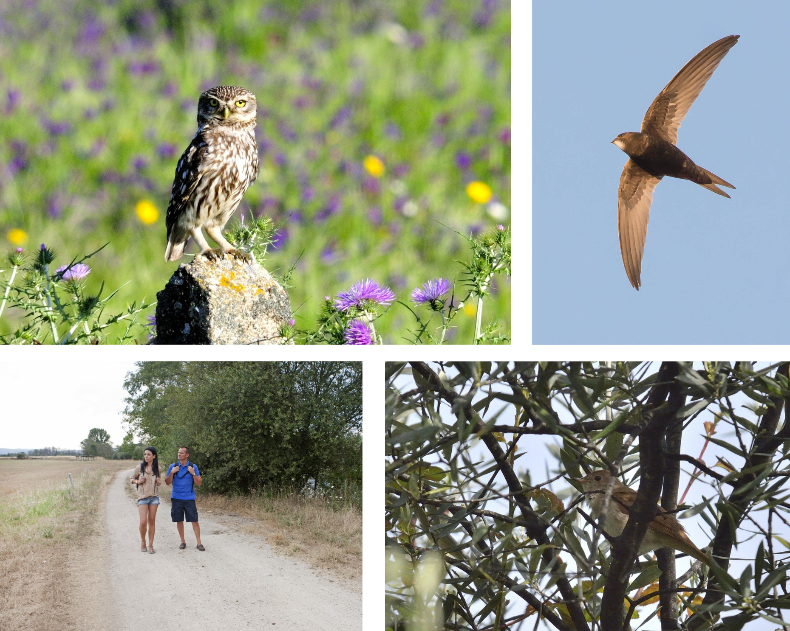
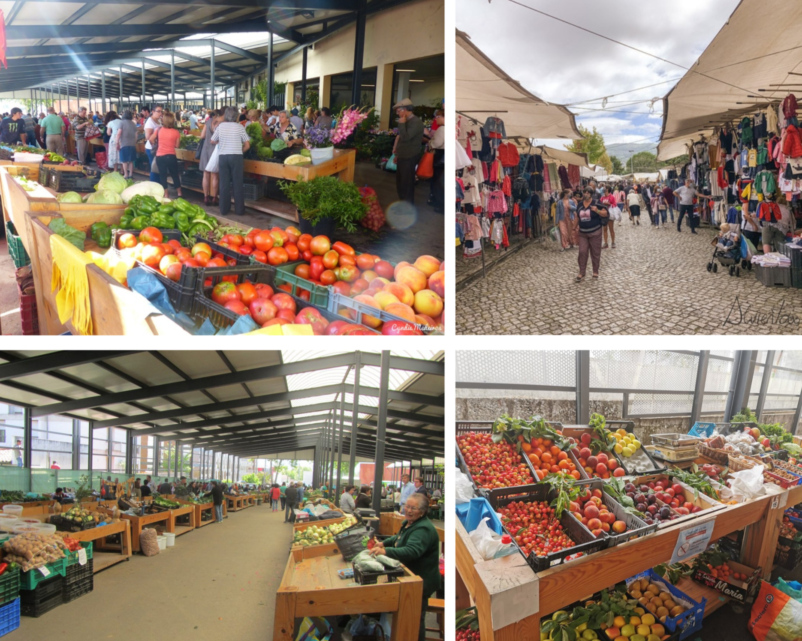
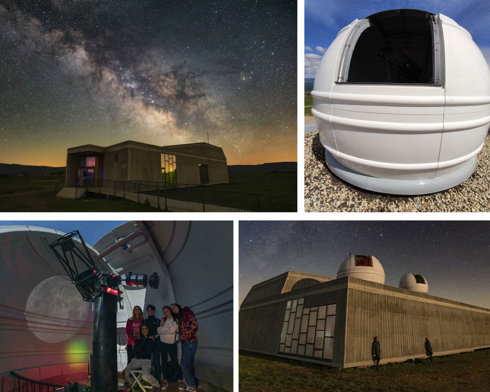
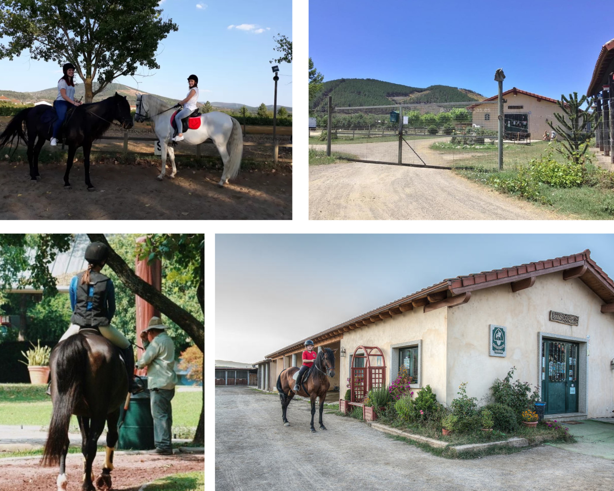

 Playa fluvial o Coiñedo  Casino en Chaves  Parapente sobre el Larouco  Balneario de Cabreiroa
 Rutas de observación de aves  Mercado de Chaves  Centro astronómico de Trevinca  Club Hípico Cigarrón Monterrei